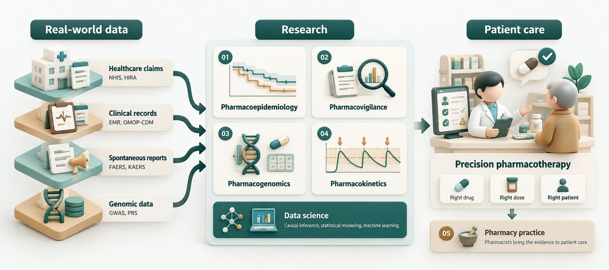

PRECISE Lab은 약물치료와 관련하여 실제 임상현장에서 발생하는 중요한 질문을 다양한 의료 데이터를 이용하여 연구합니다.
건강보험 청구자료, 전자의무기록, 약물이상사례 자발보고자료, 유전정보 등 다양한 real-world data를 활용하여 약물의 효과와 안전성을 평가합니다.
이러한 연구를 통해 실제 환자의 약물치료 의사결정에 활용할 수 있는 신뢰도 높은 근거를 생성하고, 보다 안전하고 효과적인 약물치료에 기여하는 것을 목표로 합니다.
PRECISE Lab은 실제 임상환경에서의 약물치료 효과와 안전성을 보다 정확하게 이해하고 개인별로 최적화된 약물치료 전략을 제시하기 위해 약물역학, 약물감시, 약물유전체학 및 약동학 연구를 수행합니다. 또한 이러한 근거가 실제 환자 진료로 이어질 수 있도록 약사 직능 개발과 관련된 연구에도 관심을 두고 있습니다.
Research 자세히 보기 →